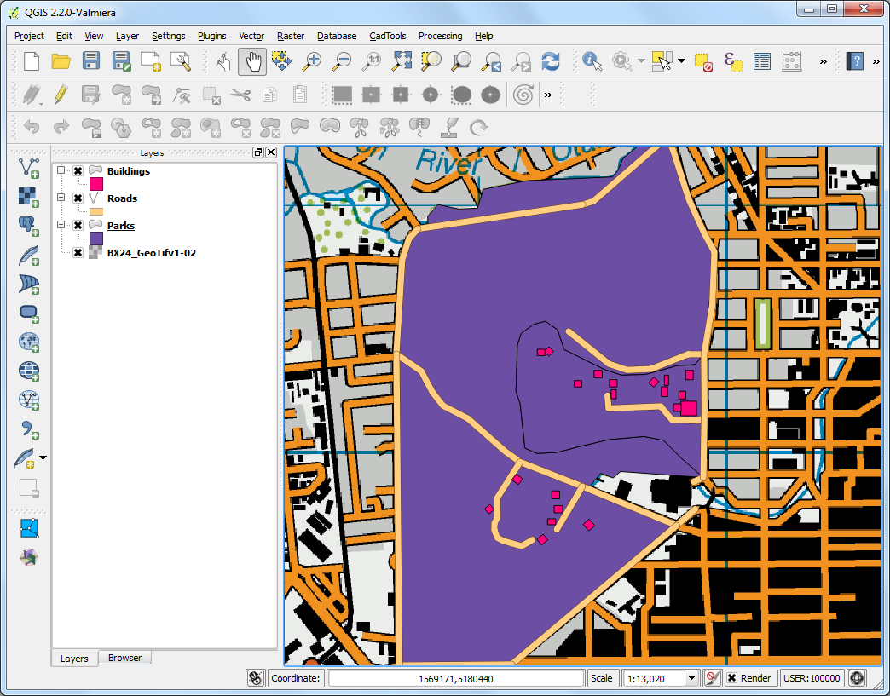

Vettorializzare mappe raster
[ Download PDF A4 Letter ]
Digitalizzare è uno dei compiti che gli specialisti GIS sono chiamati a svolgere con maggior frequenza. Una cospicua quantità dell’intero GIS time è normalmente investita nella digitalizzazione di dati raster per ottenere dei layer vettoriali da usare nel corso delle nostre analisi. QGIS dispone di potenti risorse per la digitalizzazione e l’editing che esploreremo nel corso di questa esercitazione.
Descrizione dell’esercizio
Partiremo da una carta topografica raster e creeremo alcuni layer vettoriali per rappresentare le geometrie che interessano un parco e l’area circostante.
Altri aspetti che avremo modo di apprendere nel corso dell’esercizio
Procedimento
Andate su . Individuate l’immagine scaricata BX24_GeoTifv1-02.tif e fate click su Apri.

Abbiamo caricato un file raster piuttosto pesante e potrete notare che, quando fate operazioni di zoom o di pan sulla mappa, passa un certo tempo prima che l’immagine venga visualizzata di nuovo. QGIS offre una semplice soluzione per rendere il caricamento dei raster più veloce attraverso Image Pyramids. Con questo servizio QGIS crea delle piastrelle (tile) precaricate a risoluzioni diverse e saranno proprio queste piastrelle - le cosiddette piramidi - a venir rappresentate al posto dell’intero raster. Ciò renderà la navigazione più rapida e diretta. Fate click con il tasto destro del mouse sul layer del raster BX24_GeoTifv1-02 e scegliete Proprietà.

Scegliete la scheda Piramidi. Tenete premuto il tasto Ctrl e selezionate tutte le risoluzioni proposte nel pannello Risoluzioni. Lasciate le altre opzioni come sono e fate click su Crea piramidi. Quando il processo è finito fate click su OK.

Tornate sulla finestra principale di QGIS e usate lo strumento Zoom per individuare l’area di Hagley Park nella città di Christchurch. Questo è l’area verde che intendiamo digitalizzare.

Prima di iniziare è necessario impostare l’opzione Digitalizzazione. Andate su .

Selezionate la scheda Digitalizzazione nella finestra di dialogo Opzioni . All’interno della scheda Snapping e precisamente nella casella Modalità di snap predefinita, settate la voce Al vertice e al segmento. E’ preferibile settare le caselle Modalità di snap predefinita e Raggio di ricerca per le modifiche dei vertici su pixel invece che su unità di mappa. Questo ci assicura che la distanza di snapping rimane costante indipendentemente dal livello di zoom. Sulla base della risoluzione dei vostri schermi, scegliete dei valori appropriati. Click su OK.

Ora siamo pronti ad avviare la digitalizzazione. Per prima cosa creeremo un layer per le strade trasformando in dati vettoriali le strade intorno all’area del parco. Selezionate . Naturalmente, per vostre specifiche esigenze, avreste anche potuto scegliere di creare un nuovo shapefile selezionando Nuovo shapefile.... Spatialite è un formato aperto dei database, per molti versi simile al formato ESRI per i geodatabase. Il database Spatialite è contenuto all’interno di un singolo file che, salvato all’interno dei vostri dispositivi di memoria, riesce a contenere insieme diversi tipi di geometrie (punti, linee, poligoni) come pure attributi di tipo non geometrico. Questo rende notevolmente più semplice spostarlo rispetto a quanto accade con un ventaglio composto da diversi shapefile. In questa esercitazione creeremo una coppia di layer poligonali e uno di tipo lineare, per cui ci sembra che un database Spatialite faccia al caso nostro. Tenete presente che, in ogni modo, potete sempre caricare un layer Spatialite e poi salvarlo come uno shapefile o in qualsiasi altro formato preferite.

Nella finestra di dialogo Nuovo layer Spazialite scegliete il pulsante ... e salvate un nuovo database spatiaLite che chiameremo nztopo.sqlite. Scegliete Roads come Nome layer e selezionate Linea come Tipo. La carta topografica di base ha come CRS EPSG:2193 - NZGD 2000, quindi dovremo selezionare lo stesso sistema di riferimento per il nostro layer stradale. Barrate la casella Crea una chiave primaria autoincrementale. Questo creerà un campo chiamato pkuid nella tabella degli attributi e assegnerà automaticamente un unico id numerico per ciascuna geometria. In generale, quando create un layer GIS, dovete decidere quali attributi assegnare alle geometrie. Considerando che qui abbiamo a che fare con un layer stradale, sceglieremo 2 attributi di base: Name and Class. Digitate Name , inteso come il nome dell’attributo, nella sezione Nuovo attributo e fate click su Aggiungi alla lista degli attributi.

In modo del tutto analogo create il nuovo attributo Class sempre con tipo di dato Testo. Fate quindi click su OK.

Una volta che il layer è stato caricato fate click sul pulsante Modifica per mettere il layer in modalità di editing.

Click sul pulsante Aggiungi elemento. Click sulla mappa per aggiungere un nuovo vertice. Aggiungete nuovi vertici lungo la linea stradale. Una volta che avete digitalizzato un segmento di strada, fate click con il tasto destro per concludere l’inserimento della geometria.
Nota
Potete usare la ruota di scorrimento del mouse per ingrandire o rendere più piccola l’immagine mentre lavorate alla digitalizzazione. Potete anche tenere pigiata la ruota del mouse e spostare la mappa con movimenti di pan.

Dopo aver fatto click sul tasto destro del mouse apparirà una finestra di dialogo chiamata Attributi. Qui potete inserire gli attributi delle geometrie che andate via via creando. Visto che pkuid è un campo che si autoincrementa, non vi sarà permesso digitare valori al suo interno manualmente. Lasciatelo vuoto e scrivete il nome della strada così come appare sulla mappa topografica. Se volete, potete assegnare un valore di Road Class. Click su OK.

Lo stile di default per il layer delle nuove linee è una linea troppo sottile. Cambiamola, così potremo vedere meglio le geometrie che digitalizziamo sulla mappa. Fate click sul layer ``Roads` e selezionate Proprietà.

Selezionate la scheda Stile nella finestra di dialogo Proprietà vettore . Scegliamo tra gli stili salvati un tratto un po’ più grande, come ad esempio Primary. Click su OK.

Ora potrete vedere chiaramente la strada digitalizzata. Fate click su Salva modifiche vettori per salvare la nuova geometria sul vostro supporto di memoria.

Prima di digitalizzare le strade rimanenti è importante aggiornare alcune altre impostazioni che sono utili per creare un layer privo di errori. Andate su .

Nella finestra di dialogo Opzioni di snap spuntare la casella in basso Abilita la modifica topologica. Questa opzione ci assicura che i confini verranno rispettati nei layers poligonali. Spuntate anche la casella Abilita l’ancoraggio alle intersezioni che ci permette di agganciarci all’intersezione di un layer di sfondo.

Ora potete fare click sul pulsante Aggiungi elemento e digitalizzare le altre strade intorno al parco. Assicuratevi sempre di fare click su Salva modifiche vettore dopo che avete aggiunto una nuova geometria, per salvare il vostro lavoro. Uno strumento molto utile per aiutarvi nella digitalizzazione è lo strumento Vertice. Fate click sul pulsante Strumento vertice.

Una volta che lo strumento vertice è attivato fate click su alcune geometrie per vedere i vertici. Fate quindi click con il tasto destro e sinistro su qualche vertice per selezionarlo. Il vertice cambierà colore una volta selezionato. Adesso, potete fare click e trascinare il vertice con il mouse. Questo può essere molto utile quando volete fare un aggiustamento dopo che la geometria è stata creata. Potete anche cancellare un vertice selezionato facendo click sul pulsante Delete .
(Option+Delete su mac).

Quando avete finto di digitalizzare tutte le strade fate click sul pulsante modifica.

- Now we will create a polygon layer representing the park boundaries. Go to
. Select the
nztopo.sqlite database from the dropdown list. Name the new layer as
Parks. Select Polygon as the Type. Create a new
attribute called Name. Click OK.

Fate click sul pulsante Aggiungi elemento e fate click sulla mappa per aggiungere il vertice del poligono. Digitalizzate il poligono che definisce il parco.
Assicuratevi che vi siete agganciati sui vertici delle strade in
modo che non ci siano vuoti tra i poligoni del parco e le linee
stradali. Tasto destro per terminare l’operazione con il poligono e
salvarlo.

Inserite il nome del parco nella finestra di pop-up Attributi.

I layers poligonali mettono a nostra disposizione un altro settaggio davvero utile chiamato Evita intersezioni. Go to . Nella finestra di dialogo che compare spuntate la casella Evita intersezioni nella riga relativa al layer chiamato Parks. Fate click su OK.

- Now click on Add feature to add a polygon. With the Avoid
intersections of new polygons, you will be able quickly digitize a new
polygon without worrying about snapping exactly to the neighboring polygons.

Click sul tasto destro per terminare il poligono e inserire gli attributi. Magicamente il nuovo poligono si è agganciato esattamente sui confini dei poligoni vicini ! Questo è straordinariamente utile quando digitalizziamo confini complessi: non abbiamo bisogno di essere esageratamente precisi e riusciamo ugualmente ad ottenere poligoni topologicamente corretti. Fate click sul pulsante Modifica per terminare la fase di editing del layer``Parks``

Finalmente è giunto il momento di vettorializzare il layer relativo agli edifici. Create un nuovo layer poligonale che chiameremo Buildings andando su .

Una volta che il layer Buildings è stato aggiunto, spegnete i layer Parks e Roads in modo che la carta topografica di base sia ben visibile. Selezionate il layer Buildings e fate click su Modifica.
Digitalizzare edifici può essere un compito ingrato. E’ particolarmente difficile aggiungere vertici manualmente in modo che i bordi siano perpendicolari e formino un rettangolo. Possiamo aiutarci con un plugin chiamato Rectangles Ovals Digitizing. Se avete bisogno di vedere come trovare e installare un plugin andate su usare i plugins . Una volta che il plugin **Rectangles Ovals Digitizing**è stato installato, vedrete una nuova barra degli strumenti proprio sopra la finestra principale di QGIS.

Fate uno zoom su un area con molti edifici e fate click sul pulsante Rectangle by Extent. Fate click e disegnate un rettangolo perfetto. Allo stesso modo aggiungete gli edifici rimanenti.

Noterete che alcuni edifici non sono verticali. Quindi sarà necessario disegnare un rettangolo e ruotarlo di una grandezza angolare che lo allinei all’edificio. Fate click sul pulsante Rectangle from center.

Fate click al centro dell’edificio e muovete il mouse in modo da creare un rettangolo verticale.

E’ necessario ruotare questo rettangolo per allinearlo all’immagine sulla carta topografica. Lo strumento per ruotare questi oggetti è disponibile nella barra degli strumenti Digitalizzazione avanzata . Fate click con il tasto destro su un’area vuota della barra dei menu e attivate la barra degli strumenti “Digitalizzazione avanzata.

Fate click sul pulsante Ruota elemento .

Usate lo strumento Seleziona Singolo elemento per selezionare il poligono che volete ruotare. Una volta che il pulsante Routa Elemento è attivato vedrete un bersaglio a croce nel centro del poligono. Fate click esattamente sulla freccia bersaglio e spostate il mouse mentre tenete il tasto sinistro premuto. Comparirà una rappresentazione grafica della rotazione dell’elemento. Lasciate il pulsante del mouse quando il poligono sarà perfettamente allineato con il profilo dell’edificio.

Quando avete finito di digitalizzare tutti gli edifici salvate il layer e fate click su Modifica . Potete trascinare con il mouse i layer sulla TOC uno sull’altro per modificare la loro sequenza e migliorare la mappa finale.

Il lavoro di digitalizzazione a questo punto si può considerare terminato. Potete tematizzare ed etichettare a vostro piacimento i dati che avete realizzato per realizzare un’elegante modello topografico.